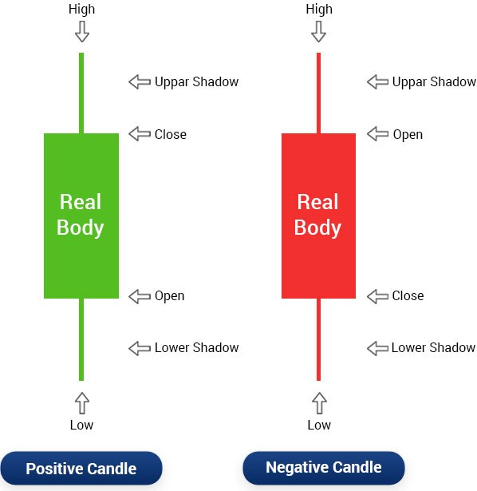
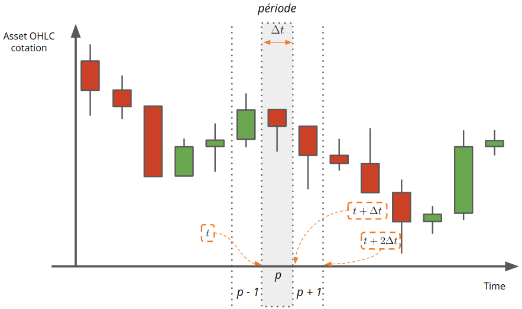
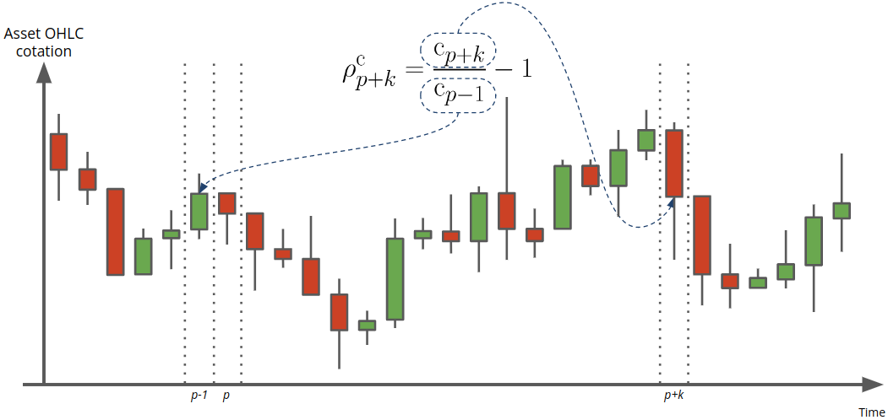
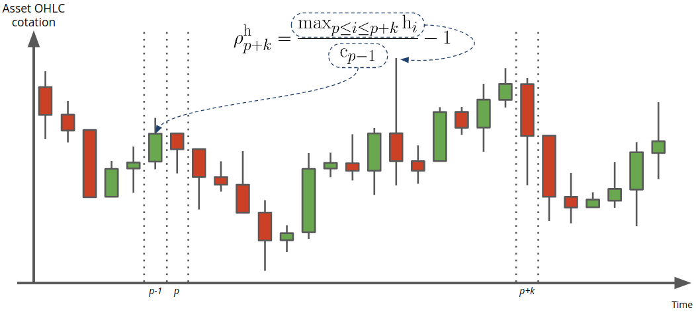
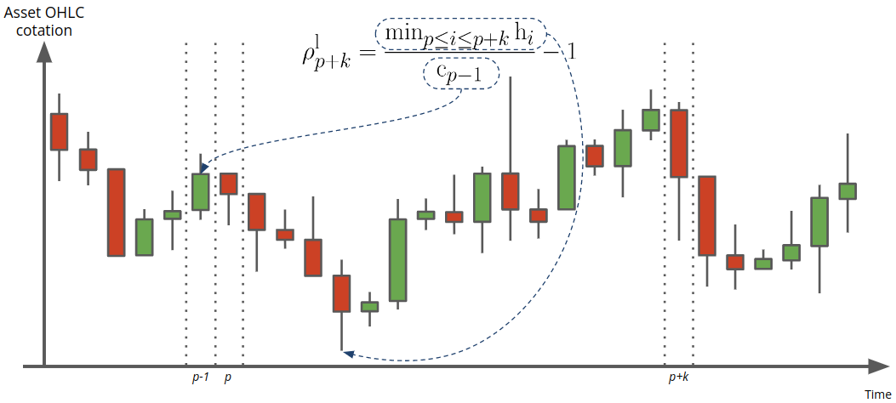
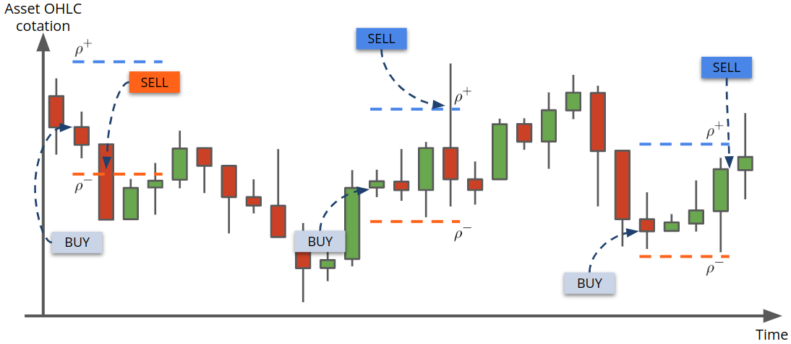
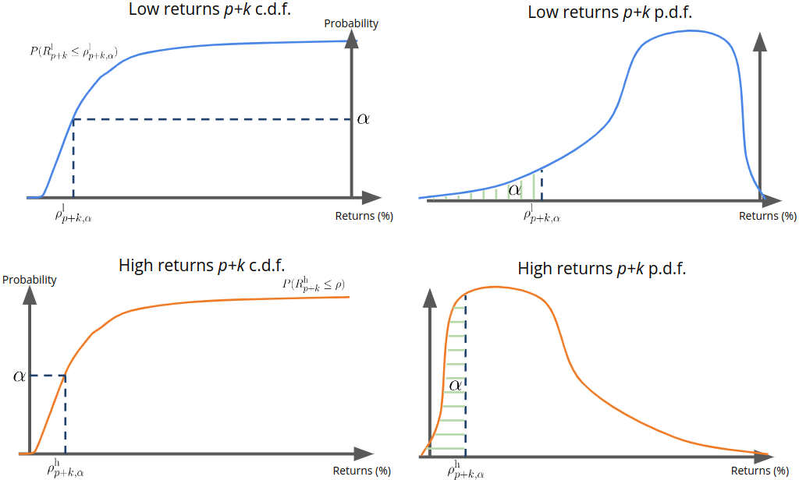

Projet MOSAIC : Analyse technique - Notions fondamentales
Table des matières
1. Introduction
Dans le domaine de l'analyse des marchés financiers, l'analyse technique correspond à un ensemble d'outils dont le but est de prédire les rendements futurs des actifs financiers. Les analyses reposent sur l'étude des historiques des données de marché disponibles, principalement la cotation et le volume des actifs considérés.
La grande majorité des méthodologies présentées reposent sur la construction d'indicateurs particuliers jugés pertinents par leurs auteurs. Toutefois, l'évaluation de ces indicateurs n'est réalisée que sur la base de backtesting empiriques sur des périodes choisies arbitrairement et relativement courtes lorsqu'il s'agit d'analyses intra-journalières. Comme les auteurs de l'article [1], nous partageons le constat que l'évaluation des performances de l'analyse technique nécessite une consolidation mathématique. Pour ce faire, nous proposons de développer une stratégie d'évaluation des indicateurs techniques innovante fondée sur l'analyse de la distribution conditionnelle des rendements par rapport aux indicateurs observés.
Ce document a pour objectif de présenter notre démarche de développement et d'évaluation d'indicateurs techniques pour l'analyse technique des cryptoactifs.
2. Données historiques OHLCV
L'évolution de la cotation d'un actif au cours du temps est usuellement présentée sous la forme de données, dites au format OHLCV (de l'anglais open, high, low, close, volume). Il s'agit d'un format pratique permettant de représenter des séries temporelles d'une manière particulière. En effet, le format OHLC (la partie volume n'est pas concernée par la subtilité du format) représente l'évolution d'une mesure au cours d'intervalles de temps réguliers successifs caractérisés par une période d'échantillonnage notée \(\Delta t\) (e.g. une minute, cinq minutes, une heure, une journée, etc).
Typiquement, les données OHLCV contiennent les variables suivantes :
timestamp: timestamp caractérisant le début de la période de mesure (par exemple exprimé en millisecondes), la fin étant déterminée par la période d'échantillonnage \(\Delta t\) utilisée.open: valeur de l'actif au début de la période.high: valeur maximum de l'actif atteinte sur la période.low: valeur mimimum de l'actif atteinte sur la période.close: valeur de l'actif à la fin de la période.volume: montant cumulé des ventes et des achats de l'actif sur la période.
Il est courant de visualiser les données OHLC à l'aide du graphique, dit en chandeliers. En fonction, des valeurs d'ouverture (open) et de fermeture (close), on parle également de chandeliers haussiers et baissiers, cf. Figure 1.

Figure 1 : Représentation du symbole de chandelier.
Dans un diagramme en chandelier, on retrouve les données OHLC mais également les notions de :
- corps (body) représentant la distance entre la cotation d'ouverture et de fermeture de l'actif sur une période ;
- mèches ou ombres supérieures (upper shadow) représentant la distance entre la partie haute du corps et la cotation la plus haute sur une période ;
- mèches ou ombres inférieures (lower shadow) représentant la distance entre la partie basse du corps et la cotation la plus basse sur une période ;
Le tableau suivant donne un aperçu des premières données de cotation du BTC par rapport à l'USDC de l'année 2021 avec une période d'échantillonnage \(\Delta t =\) 5 minutes.
| open | high | low | close | volume | |
|---|---|---|---|---|---|
| time | |||||
| 2021-01-01 00:00:00+00:00 | 28 964.54 | 29 064.55 | 28 958.66 | 29 018.17 | 8.77 |
| 2021-01-01 00:05:00+00:00 | 28 993.74 | 28 996.04 | 28 890.99 | 28 914.30 | 11.15 |
| 2021-01-01 00:10:00+00:00 | 28 902.53 | 28 908.49 | 28 741.86 | 28 790.00 | 4.58 |
| 2021-01-01 00:15:00+00:00 | 28 798.99 | 28 891.63 | 28 798.29 | 28 884.38 | 4.31 |
| 2021-01-01 00:20:00+00:00 | 28 845.04 | 28 886.67 | 28 789.15 | 28 885.73 | 13.21 |
Par exemple, la première ligne du tableau signifie que le 01/01/2021 :
- à 00:00:00, le prix d'un BTC était de 28964,54 USDC ;
- à 00:05:00, le prix d'un BTC était entre 29018,17 USDC (fermeture période) et 28993,74 USDC (ouverture période suivante) ;
- entre 00:00:00 et 00:05:00 le prix d'un BTC est passé par un minimum 28958,66 USDC et un maximum de 29064,55 USDC.
Le marché BTC/USDC étant ouvert 24h/24 et 7j/7, nous devrions observer \(\text{close}(t-1)\) égale à \(\text{open}(t)\) pour tout \(t\). Toutefois, la collecte des données n'étant pas instantanée, il est fréquent d'observer de légères différences entre le cours d'ouverture de la période courante et le cours de fermeture de la période précédente.
3. Notations mathématiques
3.1. Notions temporelles
Nous avons introduit précédemment la période d'échantillonnage des données \(\Delta t\). On note également \(t_{0}\) la première date d'échantillonnage. Dans l'exemple de données précédent, on rappelle que \(\Delta t = 5\) minutes et que \(t_{0} =\) 2021-01-01 00:00:00.
Nous introduisons ensuite l'indice \(p \ge 0\) permettant de référencer la \(p\) -ème période d'observation des données (cf. Figure 2), i.e. entre \(t_{0} + p\Delta t\) et \(t_{0} + (p+1)\Delta t\). En reprenant l'exemple précédent, on a :
- 1er période d'observation \(p = 0\) : période entre 2021-01-01 00:00:00 et 2021-01-01 00:05:00 ;
- 5ème période d'observation \(p = 4\) : période entre 2021-01-01 00:20:00 et 2021-01-01 00:25:00.

Figure 2 : Notion de période sur les données OHLCV.
Les données OHLCV sont notées dans la suite comme suit :
- \(\text{o}_{p}\) : cotation de l'actif à l'ouverture de la période \(p\), i.e. à \(t = t_{0} + p\Delta t\) ;
- \(\text{c}_{p}\) : cotation de l'actif à la fermeture de la période \(p\), i.e. à \(t = t_{0} + (p+1)\Delta t\) ;
- \(\text{h}_{p}\) : cotation maximum de l'actif sur la période \(p\) ;
- \(\text{l}_{p}\) : cotation mimimum de l'actif sur la période \(p\) ;
- \(\text{v}_{p}\) : volume échangé de l'actif la période \(p\).
3.2. Chandelier
En plus des notations précédentes, nous pouvons introduire différentes grandeurs associées aux parties du diagramme en chandelier.
En considérant, le chandelier représentant une donnée OHLC à la période
\(p\), nous avons :
- Le corps \(\text{b}_{p} = \text{c}_{p} - \text{o}_{p}\).
- L'ombre inférieure \(\text{s}_{p}^{\ell} = \min\{\text{c}_{p}, \text{o}_{p}\} - \text{l}_{p}\).
- L'ombre supérieure \(\text{s}_{p}^{u} = \text{h}_{p} - \max\{\text{c}_{p}, \text{o}_{p}\}\).
3.3. Rendements
On note enfin \(r_{p}\) la variation relative de la cotation d'un actif entre deux périodes consécutives, on parle également de rendement (ou returns en anglais) sur la période \(p\). Nous avons donc pour tout \(p \ge 1\) : \[ r_{p} = \frac{\text{c}_{p}}{\text{c}_{p - 1}} - 1. \] La quantité \(r_{p}\) est donc positive si le BTC gagne en valeur par rapport à l'USDC sur la période \(p\) et négative sinon. Le rendement représente l'indicateur principal au coeur de toutes les analyses financières réalisées sur un actif donnée.
4. Extension de la notion de rendements
4.1. Définitions
Le calcul des rendements est une étape fondamentale dans l'analyse d'un actif au cours du temps. La définition d'un rendement proposée dans la section précédente se limite au rendement sur le cours de clôture et à deux périodes successives.
En effet, nous allons étendre la définition des rendements :
- d'une part, aux cotations maximum et minimum ;
- et d'autre part, entre deux périodes \(p\) et \(p + k\) données.
Dans les paragraphes suivants, nous illustrerons les différentes rendements sur l'extrait de cotation BTC/USDC suivant.
4.2. Rendement de clôture
Débutons donc par définir le rendement de clôture entre deux périodes \(p\) et \(p+k\) (cf. Figure 3) comme suit :
\begin{equation} \rho^{\text{c}}_{p + k} = \begin{cases} \frac{\text{c}_{p + k}}{\text{c}_{p-1}} - 1 & \quad k \ge 0 \\ \frac{\text{c}_{p }}{\text{c}_{p + k - 1}} - 1 & \quad k < 0. \end{cases} \end{equation}À noter que \(k\) est un nombre entier permettant de définir le nombre de périodes futures ou passées à prendre en compte pour le calcul du rendement.

Figure 3 : Illustration graphique du calcul d'un rendement de clôture.
Exemples
Rendements de clôture calculés sur les données de l'exemple précédent et sur différents horizons :
| period | -3 | -2 | -1 | 0 | 1 | 2 | 3 |
|---|---|---|---|---|---|---|---|
| time | |||||||
| 2021-01-01 00:00:00+00:00 | |||||||
| 2021-01-01 00:05:00+00:00 | -0.358% | -0.786% | -0.461% | -0.456% | |||
| 2021-01-01 00:10:00+00:00 | -0.786% | -0.430% | -0.103% | -0.099% | |||
| 2021-01-01 00:15:00+00:00 | -0.461% | -0.103% | 0.328% | 0.333% | |||
| 2021-01-01 00:20:00+00:00 | -0.456% | -0.099% | 0.333% | 0.005% |
En prenant la période \(p\) = 2021-01-01T00:05:00 et un horizon \(k = 0\), le rendement de clôture \(\rho^{\text{c}}_{p} = r_{p}\) correspond au rapport entre la clôture de la période 2021-01-01T00:05:00 et la clôture de la période 2021-01-01T00:00:00, soit : \[ \rho^{\text{c}}_{p} = \frac{\text{c}_{p}}{\text{c}_{p-1}} = \frac{28914.30}{29018.17} - 1 \simeq -0.003579 \simeq -0.358 \% \]
En prenant la période \(p\) = 2021-01-01T00:10:00 et un horizon \(k = 2\), le rendement de clôture \(\rho^{\text{c}}_{k+2}\) correspond au rapport entre la clôture de la période 2021-01-01T00:20:00 et la clôture de la période 2021-01-01T00:05:00, soit : \[ \rho^{\text{c}}_{p + 2} = \frac{\text{c}_{p+2}}{\text{c}_{p-1}} = \frac{28885.73}{28914.30} - 1 \simeq -0.000988 \simeq -0.099 \% \]
En prenant la période \(p\) = 2021-01-01T00:20:00 et un horizon \(k = -3\), le rendement de clôture \(\rho^{\text{c}}_{k-3}\) correspond au rapport entre la clôture de la période 2021-01-01T00:20:00 et la clôture de la période 2021-01-01T00:00:00, soit : \[ \rho^{\text{c}}_{p - 3} = \frac{\text{c}_{p}}{\text{c}_{p-4}} = \frac{28885.73}{29018.17} - 1 \simeq -0.00456 \simeq -0.456 \% \]
4.3. Rendement du maximum et du minimum
Le rendement du maximum entre deux périodes \(p\) et \(p+k\) (cf. Figure 4) est défini par :
\begin{equation} \rho^{\text{h}}_{p + k} = \begin{cases} \frac{\max_{p \le i \le p + k}\text{h}_{i}}{\text{c}_{p-1}} - 1 & \quad k \ge 0 \\ \frac{\max_{p - k \le i \le p}\text{h}_{i}}{\text{c}_{p + k - 1}} - 1 & \quad k < 0. \end{cases} \end{equation}
Figure 4 : Illustration graphique du calcul d'un rendement du maximum.
Et par analogie, on définit le rendement du minimum entre deux périodes \(p\) et \(p+k\) (cf. Figure 5) :
\begin{equation} \rho^{\text{l}}_{p + k} = \begin{cases} \frac{\min_{p \le i \le p + k}\text{h}_{i}}{\text{c}_{p-1}} - 1 & \quad k \ge 0 \\ \frac{\min_{p - k \le i \le p}\text{h}_{i}}{\text{c}_{p + k - 1}} - 1 & \quad k < 0. \end{cases} \end{equation}
Figure 5 : Illustration graphique du calcul d'un rendement du minimum.
Exemples
Rendements du maximum calculés sur les données de l'exemple précédent et sur différents horizons :
| period | -3 | 0 | 1 | 2 |
|---|---|---|---|---|
| time | ||||
| 2021-01-01 00:00:00+00:00 | ||||
| 2021-01-01 00:05:00+00:00 | -0.076% | -0.076% | -0.076% | |
| 2021-01-01 00:10:00+00:00 | -0.020% | -0.020% | -0.020% | |
| 2021-01-01 00:15:00+00:00 | 0.353% | 0.353% | ||
| 2021-01-01 00:20:00+00:00 | -0.076% | 0.008% |
Rendements du minimum calculés sur les mêmes horizons :
| period | -3 | 0 | 1 | 2 |
|---|---|---|---|---|
| time | ||||
| 2021-01-01 00:00:00+00:00 | ||||
| 2021-01-01 00:05:00+00:00 | -0.438% | -0.952% | -0.952% | |
| 2021-01-01 00:10:00+00:00 | -0.596% | -0.596% | -0.596% | |
| 2021-01-01 00:15:00+00:00 | 0.029% | -0.003% | ||
| 2021-01-01 00:20:00+00:00 | -0.952% | -0.330% |
En prenant la période \(p\) = 2021-01-01T00:05:00 et un horizon \(k = 0\), le rendement du maximum \(\rho^{\text{h}}_{p} = r_{p}\) correspond au rapport entre la cotation maximum de la période 2021-01-01T00:05:00 et la clôture de la période 2021-01-01T00:00:00, soit : \[ \rho^{\text{h}}_{p} = \frac{\text{h}_{p}}{\text{c}_{p-1}} = \frac{28996.04}{29018.17} - 1 \simeq -0.000762 \simeq -0.076 \% \]
Le rendement du minimum correspondant est : \[ \rho^{\text{l}}_{p} = \frac{\text{l}_{p}}{\text{c}_{p-1}} = \frac{28890.99}{29018.17} - 1 \simeq -0.00438 \simeq -0.44 \% \]
En prenant la période \(p\) = 2021-01-01T00:10:00 et un horizon \(k = 2\), le rendement du maximum \(\rho^{\text{h}}_{k+2}\) correspond au rapport entre la cotation maximum entre les périodes 2021-01-01T00:10:00 et 2021-01-01T00:20:00, et la clôture de la période 2021-01-01T00:05:00, soit : \[ \rho^{\text{h}}_{p + 2} = \frac{\max\{\text{h}_{p}, \text{h}_{p+1}, \text{h}_{p+2}\}}{\text{c}_{p-1}} = \frac{\text{h}_{p}}{\text{c}_{p-1}} = \frac{28908.49}{28914.30} - 1 \simeq -0.000201 \simeq -0.02 \% \]
Le rendement du minimum correspondant est : \[ \rho^{\text{l}}_{p + 2} = \frac{\max\{\text{l}_{p}, \text{l}_{p+1}, \text{l}_{p+2}\}}{\text{c}_{p-1}} = \frac{\text{l}_{p}}{\text{c}_{p-1}} = \frac{28741.86}{28914.30} - 1 \simeq -0.00596 \simeq -0.59 \% \]
En prenant la période \(p\) = 2021-01-01T00:20:00 et un horizon \(k = -3\), le rendement du maximum \(\rho^{\text{h}}_{k-3}\) correspond au rapport entre la cotation maximum entre les périodes 2021-01-01T00:05:00 et 2021-01-01T00:20:00, et la clôture de la période 2021-01-01T00:00:00, soit : \[ \rho^{\text{h}}_{p - 3} = \frac{\max\{\text{h}_{p-3}, \text{h}_{p-2}, \text{h}_{p-1}, \text{h}_{p}\}}{\text{c}_{p-4}} = \frac{\text{h}_{p-3}}{\text{c}_{p-4}} = \frac{28996.04}{29018.17} - 1 \simeq -0.000762 \simeq -0.076 \% \]
Le rendement du minimum correspondant est : \[ \rho^{\text{l}}_{p - 3} = \frac{\max\{\text{l}_{p-3}, \text{l}_{p-2}, \text{l}_{p-1}, \text{l}_{p}\}}{\text{c}_{p-4}} = \frac{\text{l}_{p-2}}{\text{c}_{p-4}} = \frac{28741.86}{29018.17} - 1 \simeq -0.00952 \simeq -0.95 \% \]
5. Indicateurs et évaluation
5.1. Problématique
Un des objectifs du projet MOSAIC est d'élaborer des politiques décisionnelles d'investissements auto-adaptatives sur les marchés financiers, en particulier ceux des crytoactifs. Un investissement de type achat/vente 1 (en anglais long position) se caractérise par le fait d'acheter une certaine quantité d'un actif afin de le vendre ultérieurement dans le but de faire une plus-value.
En pratique, une politique d'investissement correspond donc à des règles d'achat et de vente d'un ou plusieurs actifs sur une durée donnée. Ces règles peuvent être établies de différentes manières, e.g. par expertise, suite à l'occurrence d'un ou plusieurs événements macroéconomiques, en fonction de l'évolution de la cotation, etc.
La stratégie que nous développons consiste à construire des règles d'achat et de vente s'appuyant sur l'analyse prévisionnelle des rendements futurs espérés (à un horizon fixe) suite à l'observation de divers indicateurs. Il est à noter que la notion d'indicateur peut se généraliser à la notion d'information disponible au moment d'appliquer des règles d'achat/vente. Par ailleurs, afin de simplifier la problématique, nous considérons que les indicateurs prennent leurs valeurs dans des domaines discrets et finis. Par exemple, nous pourrions construire nos stratégies d'achat/vente à partir de l'observation des deux indicateurs suivants :
- couleur du chandelier précédent à valeurs dans \(\{\text{vert},\text{rouge}\}\) ;
- signe du rendement sur les 3 périodes précédentes à valeurs dans \(\{+,-\}\).
Dans ce cas, nous pouvons construire un indicateur agrégé ayant six configurations \(\{(\text{vert}, +), (\text{vert}, -), (\text{rouge}, +), (\text{rouge}, -)\}\) permettant de représenter toute l'information observable à partir des deux indicateurs précédents.
La question de la pertinence des indicateurs utilisés dans une stratégie d'investissement se pose alors naturellement. Dans le secteur de la finance, il est courant d'évaluer une stratégie d'investissement en appliquant cette dernière sur des historiques de cotations (back testing) afin de simuler des décisions d'achat/vente et calculer le rendement correspondant. Toutefois, ces techniques de back testing s'avèrent relativement complexes à mettre en place et ne permettent pas de dissocier l'apport des indicateurs utilisés par rapport à celui de la stratégie décisionnelle sur la performance simulée.
Par conséquent, sans remettre en question le principe essentiel de back testing, le but est ici de proposer une méthodologie ciblée sur l'évaluation quantitative des indicateurs. Pour ce faire, nous considérons une stratégie d'investissement de référence qui sera utilisée pour évaluer tous les indicateurs. Cette stratégie repose sur trois paramètres :
- une borne de prise de profit (take profit en anglais) qui désigne le prix auquel nous vendrons notre actif si celui-ci prend de la valeur ;
- une borne de contrôle des pertes (stop loss en anglais) qui désigne le prix auquel nous vendrons notre actif si celui-ci perd de la valeur ;
- un horizon temporel au bout duquel nous vendrons l'actif au prix du marché.
Cette stratégie est illustrée dans sur la Figure 6.
5.2. Formalisation
Considérons tout d'abord les variables aléatoires suivantes :
- \(R^{\text{c}}_{p+k}\) représentant le rendement de clôture entre les périodes \(p\) et \(p+k\) ;
- \(R^{\text{h}}_{p+k}\) représentant le rendement du maximum entre les périodes \(p\) et \(p+k\) ;
- \(R^{\text{l}}_{p+k}\) représentant le rendement du minimum entre à la période \(p\) et \(p+k\).
Nous désignons par \(\mathcal{S}\) la stratégie d'investissement de référence introduite dans la Section 5.1. Nous pouvons alors évaluer le rendement de cette stratégie suite à l'achat de l'actif étudié à la période \(p\). Ce rendement, noté \(R^{\mathcal{S}}_{p+k}\), est une variable aléatoire définie comme suit :
\begin{equation} \label{eq:RSpk} R^{\mathcal{S}}_{p+k} = \begin{cases} \rho^{+} & \text{si}~ R^{\text{h}}_{p+k} > \rho^{+}~\text{et}~ R^{\text{l}}_{p+k} > \rho^{-}, \\ \rho^{-} & \text{si}~ R^{\text{l}}_{p+k} < \rho^{-}, \\ R^{\text{c}}_{p+k} & \text{sinon}, \end{cases} \end{equation}où :
- \(\rho^{+}, \rho^{-}\) sont les rendements de prise de profit et de contrôle des pertes considérés dans la stratégie ;
- \(k\) correspond au nombre de périodes au bout duquel l'actif sera vendu au rendement du marché, i.e. \(R^{\text{c}}_{p+k}\), si les seuils de rendement \(\rho^{+}\) et \(\rho^{-}\) ne sont pas atteint entre les périodes \(p\) et \(p+k\).
La Figure 6 illustre les principe de la stratégie d'investissement décrite précédemment. Dans cette exemple trois investissements (achats) sont effectuées. La durée maximum de conservation de l'actif est de \(k=4\) périodes. La premier achat (à gauche) est revendu au cours de la deuxième période car la valeur de l'actif a atteint le seuil de contrôle des pertes. Le second achat (au milieu) est revendu au cours de la quatrième période car le seuil de prise de profit est atteint. Enfin, le dernier achat (à droite) est revendu au prix de clôture de la quatrième période car aucune des bornes de vente n'est atteinte sur les quatre période de l'investissement.

Figure 6 : Principes de la stratégie d'investissement de référence.
Nous cherchons à présent à construire un score représentatif de la performance d'un ou plusieurs indicateurs dans la cadre de la stratégie d'investissement de référence précédente. Notons \(I_{p}\) la variable aléatoire représentant la configuration des indicateurs considérés (l'information disponible) à la période \(p\). La variable \(I_{p}\) est à valeurs dans l'ensemble fini des configurations possibles \(\mathcal{I} = \{i_{1}, \ldots, i_{M}\}\). En reprenant l'exemple de la Section 5.1, \(M=6\) et \(\mathcal{I} = \{(\text{vert}, +), (\text{vert}, -), (\text{rouge}, +), (\text{rouge}, -)\}\).
Le score de performance proposé consiste à évaluer l'espérance des rendements de la stratégie \(\mathcal{S}\) entre la période \(p\) et \(p+k\) conditionnellement à chaque configuration d'indicateurs observée à la période \(p-1\). Autrement dit, pour toute configuration d'indicateurs \(i_{m} \in \mathcal{I}\), nous avons :
\begin{equation} \label{orgd0adf53} \mathbb{E}[R^{\mathcal{S}}_{p+k} | i_{m}] = \pi^{+}_{i_{m}} \rho^{+} + \pi^{-}_{i_{m}} \rho^{-} + (1 - \pi^{+}_{i_{m}} - \pi^{-}_{i_{m}})\overline{\rho}^{\text{c}}_{p+k | i_{m}}, \end{equation}avec :
- \(\pi^{+}_{i_{m}} = P(R^{\text{h}}_{p+k} > \rho^{+} ; R^{\text{l}}_{p+k} > \rho^{-} | i_{m})\) ;
- \(\pi^{-}_{i_{m}} = P(R^{\text{l}}_{p+k} < \rho^{-} | i_{m})\) ;
- \(\overline{\rho}^{\text{c}}_{p+k | i_{m}} = \mathbb{E}[R^{\text{c}}_{p+k} | i_{m}]\).
5.3. Score WER
À partir de l'expression \eqref{orgd0adf53}, nous construisons le score des rendements extrêmes pondérés (weighted extreme returns en anglais) en fixant les seuils rendements \(\rho^{+}\) et \(\rho^{-}\) comme suit :
- \(\rho^{+} = \rho^{\text{h}}_{p + k,\alpha|i_{m}}\) le quantile de niveau \(\alpha\) du rendement du maximum à l'horizon \(k\), i.e. \(\alpha = P(R^{\text{h}}_{p + k} \le \rho^{\text{h}}_{p + k,\alpha}|i_{m})\).
- \(\rho^{-} = \rho^{\text{l}}_{p + k,1 - \beta|i_{m}}\) le quantile de niveau \(1 - \beta\) du rendement du minimum à l'horizon \(k\), i.e. \(1 - \beta = P(R^{\text{l}}_{p + k} \le \rho^{\text{l}}_{p + k,1 - \beta}|i_{m})\) ;
Ce score de performance, noté WER, se calcule donc pour chaque configuration d'indicateurs \(i_{m} \in \mathcal{I}\) de la manière suivante :
\begin{equation} \label{org9732deb} \text{WER}(\alpha,\beta, k, i_{m}) = \rho^{\text{h}}_{p + k,\alpha|i_{m}} \pi^{+}_{i_{m}} + \rho^{\text{l}}_{p + k,1 - \beta|i_{m}} \pi^{-}_{i_{m}} + (1 - \pi^{+}_{i_{m}} - \pi^{-}_{i_{m}})\overline{\rho}^{\text{c}}_{p+k | i_{m}} - \text{WER}_{\text{ref}}(\alpha,\beta, k), \end{equation}en posant \(\text{WER}_{\text{ref}}(\alpha,\beta, k)\) le score des rendements extrêmes de référence a priori, i.e. sans tenir compte du conditionnement par rapport aux indicateurs observés.
Interprétation du score :
- Le score WER est lié au rendement espéré résultant d'une prise de profit sur le rendement du maximum au niveau \(\alpha\) et des pertes sur le rendement du minimum au niveau \(\beta\).
- Les niveaux \(\alpha\) et \(\beta\) contrôlent la prise de risque et les gains espérés de la stratégie d'investissement (cf. Figure 7 pour une illustration des quantiles \(\rho^{\text{h}}_{p + k,\alpha|i_{m}}\) et \(\rho^{\text{l}}_{p + k, 1-\beta|i_{m}}\).
- Prendre \(\alpha\) proche de 0 signifie un seuil de prise de profit bas (donc un gain espéré faible) mais avec probabilité élevée, i.e. on gagne peu mais souvent. À l'inverse, prendre \(\alpha\) proche de 1 signifie un seuil de prise de profit haut (donc un gain espéré important) mais avec probabilité faible, i.e. on gagne beaucoup mais rarement.
- Prendre \(\beta\) proche de 0 signifie un seuil de contrôle des pertes petit mais avec une probabilité élevée, i.e. on risque de perdre peu mais souvent. À l'inverse, prendre \(\beta\) proche de 1 signifie un seuil de contrôle des pertes grand mais avec une probabilité faible, i.e. on risque de perdre beaucoup mais rarement.
- Le terme \(\text{WER}(\alpha,\beta, k, i_{m})\) permet de pénaliser le score de la configuration \(i_{m}\) en le corrigeant avec le score obtenu sans indicateur.

Figure 7 : Représentation graphique des quantiles \(\rho^{\text{h}}_{p + k,\alpha}\) et \(\rho^{\text{l}}_{p + k,\alpha}\).
5.4. Score AWER
Une variante du score WER \eqref{org9732deb} consiste à lier les niveaux de risques \(\alpha\) et \(\beta\) de sorte que \(\beta = 1 - \alpha\).
Ce score, noté AWER pour (asymetric weighted extreme returns en anglais), est défini pour chaque configuration d'indicateurs \(i_{m} \in \mathcal{I}\) par :
\begin{equation} \label{org70e0cf7} \text{AWER}(\alpha, k, i_{m}) = \rho^{\text{h}}_{p + k,\alpha|i_{m}} \pi^{+}_{i_{m}} + \rho^{\text{l}}_{p + k,\alpha|i_{m}} \pi^{-}_{i_{m}} + (1 - \pi^{+}_{i_{m}} - \pi^{-}_{i_{m}})\overline{\rho}^{\text{c}}_{p+k | i_{m}} - \text{SWER}_{\text{ref}}(\alpha, k), \end{equation}en posant \(\text{AWER}_{\text{ref}}(\alpha, k)\) le score des rendements extrêmes symétrique de référence.
L'interprétation du score AWER est analogue à celle du score WER. La différence entre les deux scores consiste à imposer une distribution des risques entre la prise de profit et le contrôle des pertes. Autrement dit, si on décide d'évaluer un indicateur en supposant une prise de profit faible mais fréquente (i.e. \(\alpha\) proche de 0) alors les pertes pourront être importantes mais rares (i.e. \(\beta\) proche de 1). En fixant, la stratégie associée à \(\alpha = 0.5\) permet de considérer un risque équilibré entre perte et profit.
5.5. Méthodologie d'évaluation
Dans cette section, nous proposons une méthodologie d'évaluation d'indicateurs reposant sur le score AWER. Les différents termes du score sont évalués de manière empirique à partir d'un historique de données sur l'actif étudié.
Soit un indicateur \(I\) à valeurs dans \(\mathcal{I} = \{i_{1}, \ldots, i_{M}\}\), le protocole d'évaluation se déroule de la manière suivante :
- Collecter des données historiques :
- Sélection de l'actif étudié, e.g. BTC/USDC.
- Choisir la période d'échantillonnage \(\Delta t\) considérée. En fonction des stratégies, \(\Delta t\) peut être plus ou moins grand, e.g. 1 min, 5 min, 1 heure, 1 journée, 1 semaine, etc.
- Fixer un horizon \(k \ge 0\) définissant le temps maximum de conservation de l'actif avant sa vente au prix du marché.
- Fixer le niveau de risque \(\alpha\) de la stratégie d'investissement de référence utilisée de manière sous-jacente par le score ACER.
- Pour chaque configuration \(i_{m} \in \mathcal{I}\) de l'indicateur étudié :
- Estimer les rendements à horizon \(p+k\) conditionnellement à l'observation de la configuration \(i_{m}\) à la période \(p-1\) à partir des données historiques.
- Estimer empiriquement le score AWER
6. Environnement technique
Les librairies Python utilisées dans les traitements présentés dans ce document sont :
| Library | Version |
|---|---|
| MOSAIC | 0.0.12 |
7. Références
Notes de bas de page:
Par opposition d'un investissement en vente à découvert (en anglais short position).